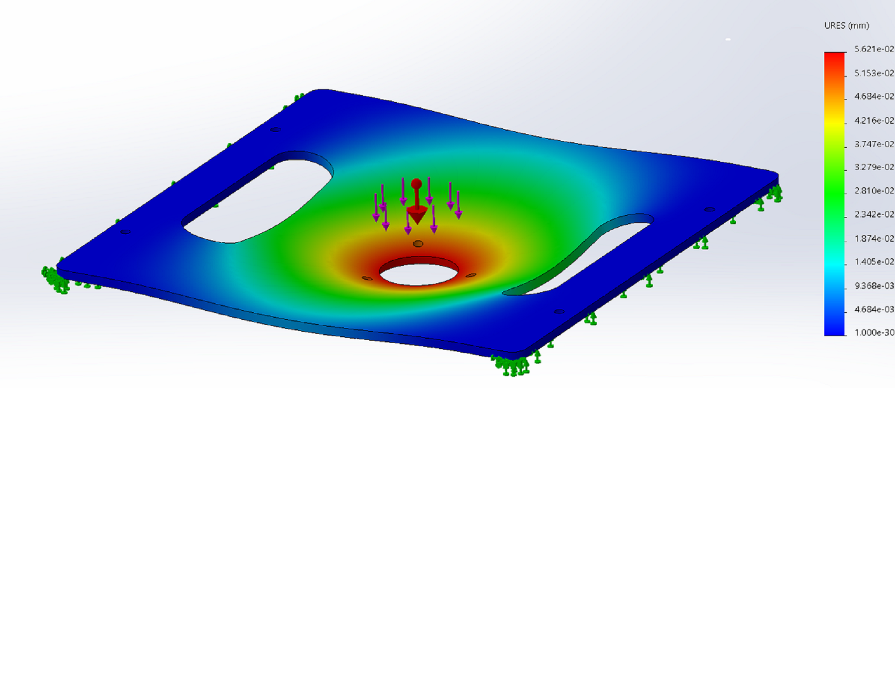
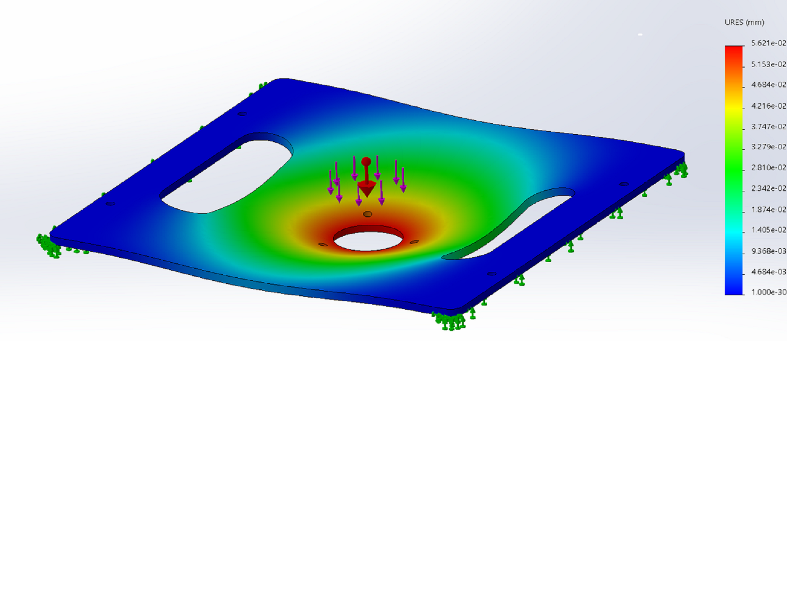

Year 2 Mechanical Engineering + USP Undergraduate
About Me
A Passionate Robotics Engineer and Aspiring Entrepreneur
I am an experienced robotics engineer who is familiar with both hardware and software development. At GovTech, I am one of the 2 robotics engineers who develop the custom autonomous navigation stack for Boston Dynamics Spot. As such, I am familiar with the entire robotics development ranging from mechanical system design and power distribution system to SLAM and autonomous navigation. As trained in mechanical engineering, I am familiar with SolidWork which is a CAD software used widely in engineering. I have hand-ons experience programming microcontrollers and developing autonomous robotics software stacks using C++ (11/14/17) and Python with popular robotics framework such as Robot Operating System (ROS) and Nvidia's Isaac SDK. I have also been exposed to deep learning in computer vision such as Object Detection and Semantic Segmentation to further enhance the perception capability of the autonomous robot. As an avid robotics engineer, I strive to continuously improve my skills to be a full stack robotics engineer who can develop the entire robotics system.
Apart from the technical expertise, I am also experienced in project management and leadership. I have led many technical robotics projects throughout my career.
 
